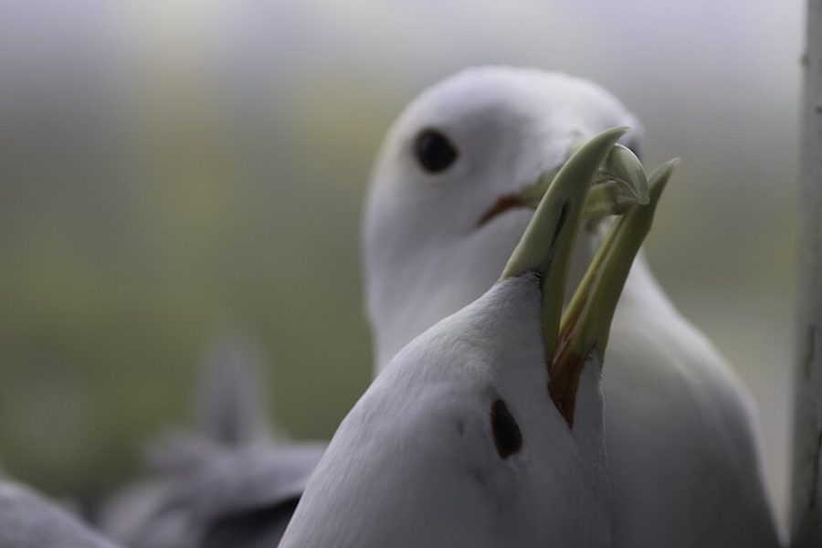
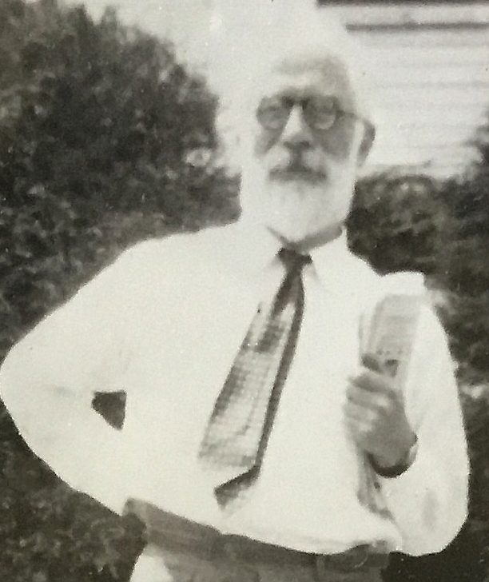
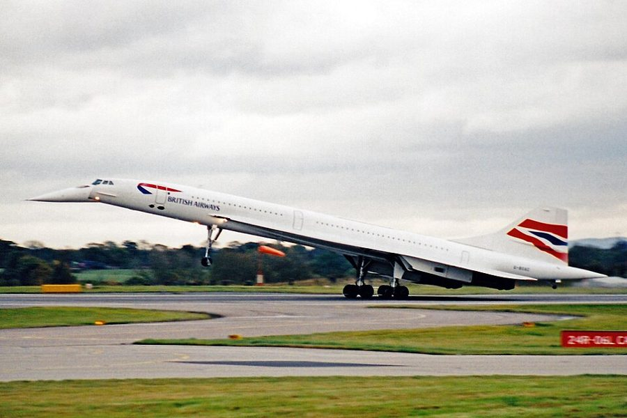

physically enjoy
… I don’t mean physically enjoy, although …
（不是指）身体上的享受
作者给引号里的 like 加注：说个体「喜欢」多交配，是指基因上划算，不是快感；后半句 although he might 是玩笑。
第 9 章的前半。上一章讲亲子之间的冲突，这一章换成一对配偶：两个毫无亲缘的个体共同养孩子，各自的基因都「希望」对方多出力。Dawkins 先找两性最根本的区别，再借 Fisher 解释为什么雌雄差不多各半，借 Trivers 讲「谁先抛弃谁」，最后照第 5 章鹰鸽的办法，搭一个羞怯、放荡、忠诚、薄情四种策略的模型。读的时候抓两条线：「剥削」「想要」都是比喻；模型的结论作者 1989 年改过口。

第 8 章停在亲子之争，并在末尾预告：那一章和下一章讲配偶冲突，读起来可能冷酷得吓人，但说的都不是有意识的动机。这一章第 1 段就从那里接过来：亲子还共享一半基因，配偶连这一半都没有。第 2 段回指第 3 章讲性时没提的「不对称」，第 25 段回指第 5 章的「鸽子集团」，第 7、11 段用到第 7、8 章的生育和亲代投资。
配偶各为自己的基因打算，雌性不能和别的雌性「串通」。在这种情况下，「先考验、后交配」的羞怯还能留得下来吗？
读的时候带着这几个问题。不用先找答案，读完回来对照「检查一下理解」。
这一页先从定义下手：雄和雌到底指什么，答案是配子的大小，后面一切都从这里推。§2 是一段插曲，用性比率说明「物种利益」解释不了多余的雄性，读着像离题，其实是在练 ESS 的思路。§3 回到一对配偶，跟着 Trivers 列出被抛弃的雌性有几条路，中间夹着小鼠和狮子。§4 话锋一转：与其事后补救，不如交配前讨价还价，并顺手纠正 Trivers 的一个错。§5 把讨价还价写成四种策略的模型，先讲一个转圈的故事，再说「其实会停下」。这最后一步，作者 1989 年自己推翻了。
作者落在哪：不必假设雌性串通：在各为自己基因的个体里，「先考验、后交配」的羞怯雌性和肯等的忠诚雄性完全可能演化出来、占多数。但 1976 年说种群会停在一个稳定比例，1989 年他承认错了。
这一页是原书第 9 章的第 1–5 节。原书各章没有小标题，粗体的节名是本站起的，下面是这一节第一段开头的几个词，在电子书里搜它就能跳过去。读完打个勾。
先把这一页用到、作者默认你懂的几个概念讲一遍。讲的是概念本身，作者拿它推出什么，读原书时自己看。前几章讲过的进化稳定策略、亲代投资、类群选择，点进去看。
有性生殖是两个配子（性细胞）融合成一个新个体。有些藻类和真菌的配子大小一样、谁都能和谁融合，叫同配生殖。绝大多数动植物的配子一大一小：大的少、不动、带着养料，叫卵；小的多、会游、几乎只带基因，叫精子。这叫异配生殖（anisogamy，书里没用这个词）。生物学上「雌」「雄」最一般的定义就是：产大配子的是雌，产小配子的是雄。有没有阴茎、谁生孩子、性染色体是什么，都因物种而异，靠不住。
在这一页：第 2–5 段。作者用配子大小给两性下定义，再转述 Parker 等人的模型说明一大一小可能怎样分化出来。
一个种群里雄与雌的数目之比。今天通行叫「性比」。Fisher 1930 年给过一个著名的论证：每个孩子都恰好有一个父亲、一个母亲，所以全体雄性留下的后代总数，等于全体雌性留下的后代总数。哪一性少，那一性的每个个体平均就分到更多后代，于是多生少的那一性的父母占便宜，比例被推回来。稳定点是父母花在儿子和女儿上的总投资各一半；生一个儿子和生一个女儿花费一样时，就是数目各半。注意它说的是「偏离 1:1 的基因会吃亏」，不是「1:1 对种群最好」。
在这一页：第 6–11 段。作者拿它说明「物种利益」讲不通、自私基因讲得通；第 11 段补上按投资而不是按数目算。
Trivers 1972 年论亲代投资的论文里的说法。两个人一起养一个孩子，到了任何一方都能独自养成的时候，谁先走，谁就把难题留给了对方：留下的一方要么独自扛到底，要么看着自己的投入白费。这像程序员说的「谁先撒手谁赢」：两个人合维护一个项目，先跑路的那位知道留下的人舍不得让项目死掉。可怕的是这是对称的：双方都可能这样「想」，于是都有理由抢先。这里的「想」是比喻，说的是倾向于先走的基因会被选择留下。
在这一页：第 20 段。作者用一段内心独白演示它，紧接着说明独白只是为了讲清楚。
Dawkins 给雌性择偶的两条路起的名字。家庭幸福：挑看来会留下帮忙养孩子的雄性，比如要求长时间求偶、先筑巢、先喂食，耐不住的就被筛掉。大丈夫：不指望雄性帮忙，只挑看来基因最好的雄性，生下的儿子也会受欢迎。今天的择偶研究大致对应「直接好处」（食物、照料、领地）和「间接好处」（好基因）两类解释，名字没有沿用。两条路不互斥，许多物种两样都要。
在这一页：第 21 段提出两种策略，第 22–35 段讲家庭幸福策略；大丈夫策略留到下一页。
以过去投入了多少来决定要不要继续投入。英法合造的协和超音速客机，开发费用一再超支、前景越来越差，两国政府仍继续投钱，常被当作这种做法的例子；Dawkins 和学生 Carlisle 1976 年借它起了这个名字。经济学叫沉没成本谬误：已经花掉的收不回来，该不该继续，只看往后的得失。程序员熟悉的版本是「这个项目重写了一半，不能停」。Arkes 和 Ayton 1999 年的综述认为，动物里还找不到确凿的协和式谬误，人反而常犯。
在这一页：第 24 段，作者用它纠正 Trivers：雄性先投入了多少，不能单独让它留下；要看别的雌性好不好追。
先猜：从几乎全是羞怯雌性和忠诚雄性的种群出发（第 28 段的「理想的一夫一妻社会」），用书里第 27 段的计分跑下去，种群会像第 33 段说的那样，停在羞怯占 5/6、忠诚占 5/8 吗？再点「跑 500 代」验证。
雌性有两种：羞怯（要求长时间求偶）和放荡（马上交配）；雄性有两种：忠诚（肯等，交配后留下帮忙）和薄情（不等，交配后就走）。每一代，得分高的那种份额涨一点。上面三个滑杆是计分，默认就是书里第 27 段的数。方框图里一个点代表整个种群：往右是羞怯的雌性多，往上是忠诚的雄性多。在方框里点一下，就从那里出发。
需要浏览器打开脚本才能运行。
为什么这里会绕圈，鹰鸽却会停？在鹰鸽里，鹰一多，鹰自己就常碰上鹰，得分立刻下降，偏离被马上纠正。这里不一样：按书里的计分，忠诚和薄情两种雄性谁占便宜，只看雌性里羞怯的有多少，和雄性自己的比例无关；雌性那边也一样，只看雄性。所以雄性那边偏了一点，不会马上吃亏，要等雌性那边被带着变了，才反过来推雄性，而推回来时已经冲过了头。两边你追我赶，就成了一圈圈的循环。画面是把连续变化切成很小的步子一步步算的近似；要是一代只算一大步，轨迹会一圈比一圈大，那是粗算带进来的误差，不是模型本身。「一整圈的平均正好落在均衡点上」是这类模型的一个数学性质，是本站的补充，书里没有说。
按在书里出现的顺序排，标题前是节号。只讲到读懂这一页需要的程度。
第 1 段说，把配偶关系看成互不信任、互相剥削，是 Trivers 特别强调的，在当时的动物行为学家看来还是新观点。出处是他 1972 年的论文《亲代投资与性选择》，收在纪念达尔文《人类的由来》一百年的文集里。这篇论文提出：在后代身上投资多的一性会更挑剔，投资少的一性会为配偶互相竞争，这是解释性选择的一个基本思路。这一页里被抛弃的雌性有几条路、「无情的约束」，都转述自它。
第 5 段转述的是 Geoffrey Parker、Robin Baker 和 V. G. F. Smith 1972 年在《理论生物学杂志》上的模型：从配子一样大的祖先出发，大配子给胚胎更多养料，小配子能造得更多，中间大小的两头不讨好，于是分成一大一小两极。作者转述时用的是「可能」这样演化出来，并把小配子叫「剥削者」、大配子叫「诚实者」，这两个词是他的比喻。今天这个模型仍被看作解释异配生殖的经典起点。

第 6 段说这个解释「最早」是 Fisher 给的，指他 1930 年的《自然选择的遗传理论》。科学史家后来查到，同样的道理达尔文 1871 年《人类的由来》第一版里就提过（第二版删了），德国人 Carl Düsing 1884 年也论证过；Fisher 的贡献是把它讲成了今天人人引用的形式。
第 6 段说，一项对象海豹的研究里，4% 的雄性占了观察到的 88% 的交配。书里没说是谁的研究。这类数据最出名的来自 Burney Le Boeuf 1970 年代在加州 Año Nuevo 对北象海豹的长期观察：每个繁殖季只有少数优势雄性能交配，大批雄性一辈子没有机会。作者拿它说明，从「物种利益」看，这些光棍纯属浪费。
布鲁斯效应得名于英国动物学家 Hilda Bruce 1959 年在《自然》上的报告：怀孕的小鼠闻到陌生雄鼠的气味会流产，闻原配的气味就不会。第 16 段说这「很可能」是雄性除掉别人的孩子的办法，第 18 段又从雌性一方说，及早流产对她也可能划算。同一段的雄狮：新雄狮接管狮群后，有时会杀死原有的幼崽，作者说「大概」因为不是自己的。后来的野外研究支持这个解释：Packer 和 Pusey 1983 年报告，狮群换了雄狮后幼崽大量死亡；Roberts 等 2012 年在埃塞俄比亚发现，野生狮尾狒的优势雄性被取代后，约八成怀孕的雌性终止了妊娠。

第 24 段的「我在一篇论文中」，指 Dawkins 和 Tamsin Carlisle 1976 年发在《自然》上的短文《亲代投资、抛弃配偶和一个谬误》。Carlisle 是他当时的学生，下一页讲鱼爸爸时还会出现。文章指出 Trivers 把「已经投入的多」当成「会继续投入」的理由，这在经济学上讲不通。协和式客机 1969 年首飞，1976 年投入航线，2003 年退役。
注 47 说，指出「会收敛」这个错的，是奥地利的数学生物学家 Peter Schuster 和 Karl Sigmund；他们 1981 年在《动物行为》上的论文就叫「羞怯、薄情和稳定策略」。注 46 讲的是 Maynard Smith 1977 年的「坚守 / 离弃」模型（Grafen 和 Sibly 也独立做过）：雌雄各自可以守着孩子（Guard）或走掉（Desert），结局只落在四种之一，作者照代表动物叫它们鸭型（雄走雌守）、棘鱼型（雌走雄守）、果蝇型（都走）、长臂猿型（都守），而且只有特定的两种能在同一组条件下并存。
按节排，每节前面是分节地图里的节名。标着「每个字都认识」的，是熟词生义、习语和反话，最容易读错。灰色的那几个字是原句里的位置，在电子书里搜它就能找到。
对着中译本（40 周年增订版）读的时候看这一节。下面是译本这几节和这一页尾注里会让人读错的地方：灰字是英文原文那一处的几个词，在英文电子书里搜它；方框里是译本的原句，在译本电子书里搜它。措辞别扭但意思没错的不收。全书的勘误汇总在译本勘误。
… comparatively new one to ethologists.
译本：「对个体生态学家来说是一种比较新的观点」
ethologist 是动物行为学家，Lorenz、Tinbergen 那一派，作者自己也是。这句说：把配偶看成互相剥削，对当时研究动物行为的人是新观点。第 5 章同一个词也有这个问题。
… Female exploitation begins here.
译本：「这就为雌性个体带来了利用这种条件的机会」
原文说雌性被剥削（雄性占了雌性投入的便宜）就从配子大小的差别开始。读译本会以为是雌性得到了利用别人的机会，正好反了。尾注 45 的标题照抄了这一句，读注时也按原文理解。
… in one study of elephant seals, …
译本：「在一项有关海象的研究中」
elephant seal 是象海豹，海豹的一类，雄性有短象鼻、占着一大群雌性；海象是 walrus，另一种动物。本章第 9、11 段（还有下一页）都是同一个错。
… What Fisher showed is that …
译本：「最适宜的性比率是50∶50」
原文是 stable sex ratio，稳定的性比率。稳定和最优正是本章要分开的两件事：从「物种利益」看，多余的雄性是浪费（第 6 段），1:1 并不对种群最好，它只是偏离的基因会吃亏。
… she has no hope of fooling him …
译本：「因为我们已经假定她不愿意使他受骗」
第 18 段开头的假设是：被抛弃的雌性没法骗新的雄性替她养孩子。这里说的是能力，不是意愿。按「不愿」读，流产对双方都有利的推理就接不上了。
… exploits her in the first place?
译本：「减轻由于其配偶首先对她进行剥削而造成损失」
原文问：雌性有没有办法从源头上减少配偶对她的剥削。这是全章的转折：前面讲被抛弃后怎么补救，从这里起讲交配之前的筹码。前一句的成语也说过了头，原文只说那些办法都是坏局面里的将就。
A business man should never say
译本：「商人永远不会说」
原文是「不应该说」。现实中的人恰恰常这样说（「已经投了这么多，不能停」），所以它才是一个谬误。读成「不会说」，协和客机这个例子就失去了意思。
… take Maynard Smith’s method of analysing …
译本：「采用史密斯用以分析进犯性对抗赛的方法」
Maynard Smith 是复姓。正文叫他「史密斯」，这一页的尾注 46、47 又叫「梅纳德·史密斯」，是同一个人。「进犯性对抗赛」指第 5 章分析的打斗。
… males are faithful, is evolutionarily stable.
译本：「的种群在遗传上是稳定的」
原文是 evolutionarily stable，就是第 5 章的进化稳定策略（ESS），不是「遗传上稳定」。这正是作者 1989 年在注 47 里撤回的说法。
The female sex is exploited, and the fundamental evolutionary basis for the exploitation is the fact that eggs are larger than sperms.— §3 第 14 段。本站译：雌性被剥削，这种剥削在进化上的根本原因，是卵子比精子大。
这是这一章最常被断章取义的句子，常被读成「生物学证明女性天生吃亏」。它的口气是认真下判断，但「剥削」是第 13 段刚声明过的比喻用法：说的是投资的不对称，没有说谁该如何。作者 1989 年两处往回收：注 45 说把配子大小当作性别角色的根「有误导」，注 44 说这一章开头太冷峻、章末谈人类的话措辞幼稚。读这句时把三处连起来看。
… it can be shown that really there would be no oscillation. The system would converge to a stable state.— §5 第 33 段。本站译：……可以证明，其实不会振荡。这个系统会收敛到一个稳定状态。
全书最有名的一处错。口气很笃定（it can be shown），依据是类比第 5 章的鹰鸽。1989 年作者在注 47 开头就说「这句话是错的」，并特意把它留在正文里，因为「错得有意思」。关键词是 converge：均衡点他算对了，收敛不收敛他没有查。
正文里的星号是 1989 年第二版加的，点了跳到书后的尾注。下面是这一页的每个星号：注里说了什么，值不值得现在就点开。英文是星号前紧挨着的几个词，在电子书里搜它就能找到那个星号。
… who are not related to each other?*
作者说开篇这句暗含「其他条件不变」：配偶显然能从合作中得到很多，多半在玩一场非零和的游戏（第 12 章讲）。他承认这里语气太偏向冷酷自私，当年是为了对抗「配偶总会无私合作」的主流看法，今天会写得温和些；还说章末关于人类性别角色的话措辞幼稚。值得点开，很短。
… is virtually unlimited. Female exploitation begins here.*
作者说，把精卵大小的差别当作性别角色的根「有误导」：一个精子便宜，造几百万个还要在竞争中送进去就不便宜了。他改用一个更一般的论证：两性 A、B 只要在「打斗」和「养育」之间的取舍起点略有不同，差别就会自我放大，最后一方成了雄、一方成了雌；精卵分化是这种分化的结果，不是原因。一定要点开。
… and apply it to sex.*
作者介绍 Maynard Smith 后来的「坚守 / 离弃」模型：经济条件怎么变，结局都只落在鸭型、棘鱼型、果蝇型、长臂猿型四种之一，而且只有特定的两种能在同一组条件下都稳定，哪一种出现看历史的偶然。他说这能帮人推测配偶制度在演化中怎样转变。想多看一个模型的可以点开。
… would converge to a stable state.*
作者开门见山：这句是错的。他算对了两边打平的比例，却没检查这个平衡稳不稳，它是刀刃，不是山谷。Schuster 和 Sigmund 指出了这一点，他自己在计算机上模拟，得到的是没完没了的循环，正是第 30–32 段当作讲解用的那个循环。他说这和第 5 章还击策略者的错是同一类。一定要点开。
读完这一页的几节再看。下面是作者在这几节里的论点，由本站按论点重新组织，不按原书的顺序；每条下面是依据所在的段落，拿不准就回书里那几段再读一遍。
亲子之间还有一半基因相同，配偶毫无亲缘，冲突应该更大。作者认为把两性关系看成互相剥削比「为了物种的合作」更说得通。（1989 年的尾注加了限定：配偶多半能从合作中获益，开头语气太冷峻。）
§1 第 1 段，§3 第 14 段，注 44有阴茎、哺乳都不普遍，只有「雌配子大而少、雄配子小而多」处处成立。雄性每个后代投入少，就能多配；雌性投入多，从受孕起就被套得更深，所以通常是雄性先走、雌性多养。（1989 年的尾注改成：这样强调有误导，配子分化是两性分化的结果而不是原因。）
§1 第 2、4–5 段，§3 第 14 段，注 45从物种看，多余的雄性是浪费；但比例一偏，生少的那一性就更划算，偏离的基因吃亏。严格说是儿子和女儿的总投资各半，数目各半只是通常的情形。
§2 第 6–11 段在一定条件下，先抛弃的一方占便宜（Trivers 的「无情的约束」）。但 Trivers 以为先期投入本身就让雄性不愿走，作者说这是协和式谬误：雄性走不走，要看别的雌性是否也同样难追，也就是多数雌性怎么做。
§3 第 14、20 段，§4 第 23–24 段，§5 第 25 段按他定的计分，四种策略你追我赶，1976 年他说种群会收敛到羞怯 5/6、忠诚 5/8，偏离会被另一性的变化纠正，所以羞怯对雌性的基因有利。1989 年的尾注改成：那只是一个不稳定的平衡点，系统会无止境地循环。
§5 第 25–35 段，注 47合起来：作者把第 5 章「找 ESS，别找物种利益」的办法搬到两性之间：性比率、谁先走、羞怯与否，都从「这种倾向的基因吃不吃亏」去推。最值得带走的是方法；具体的落点，作者自己在尾注里改了两处。
这本书 1976 年出版。下面挑出这一页里能被后来的研究检验的说法，分「书里 / 当时 / 今天」三栏，并给一个结论。结论判的是标题里「书里的说法：」后面那一句。全书的这一节汇总在对照今天。
读完作者的论点，再看它站不站得住。每一块摆出三样：主流怎么看，作者怎么看，本站的评论。最后一句是本站对这一页的总体判断。
主流看法：两性之间基因利益不一致，今天是一个成熟的研究领域，叫性冲突（Arnqvist 和 Rowe 2005 年的专著是代表）。这里的「冲突」「剥削」是适合度上的术语，不是道德评价；性别角色由配子、性比、生态条件共同决定，不由配子大小一锤定音。
作者的看法：剥削从配子大小开始（第 4、14 段），但他第 13 段声明拟人是比喻；1989 年说强调配子大小有误导（注 45）、开头太冷峻（注 44）。
本站的评论：论证的核心站得住：投入不对称会让两性的「最优做法」不同，这是可检验的生物学。问题在用词：「剥削」「受害」这类词让一句关于配子的话，读起来像关于男女的结论。作者自己在尾注里往回收了两次，读者也该把这一章的「雌性」「雄性」严格当作配子大小的代称，不要直接搬到人身上；作者在这一页里也没有这样搬。
主流看法：找到「各方得分相等」的点只是第一步，还要看推一下会不会回来。Selten 1980 年的结果说明，雌雄这类角色分明的博弈里，混合的平衡点本来就不可能是 ESS。
作者的看法：1976 年他类比鹰鸽，断定会收敛，还给出「偏离会被另一性纠正」的理由（第 33–34 段）；1989 年在注 47 认错，说真实的动态是无尽的循环。
本站的评论：错在类比：鹰鸽里鹰多了鹰自己吃亏，这里雄性的得分只看雌性，偏离要绕一圈才被推回，必然冲过头。注 47 有一句说薄情者略多时「反而更占便宜」，按书里的收益表算并不准确：薄情者多了，两种雄性的得分仍然相等，变化是经过雌性绕回来的（本站按收益表验算）。不过第 35 段的落点没有倒：转一圈平均下来，羞怯和忠诚仍占多数，羞怯照样对雌性的基因有利。
主流看法：决策只该看往后的得失，这在经济学和行为生态学里都是共识；Arkes 和 Ayton 1999 年甚至认为人比动物更常犯协和式谬误。但过去的投入常常改变往后的得失，比如孩子越大，养成所需越少。
作者的看法：Trivers 的推理是「错误的经济学」，雄性留不留只看将来是否划算，这取决于多数雌性怎么做（第 24–25 段）。
本站的评论：作者对，而且他自己在第 19 段已经给出了正确的版本：孩子越大，雌性越值得撑下去，不是因为「已经投了」，而是因为剩下的活少了。两种说法常被混为一谈。这一点对读者有实际用处：判断一个做了一半的项目该不该继续，问「从现在起值不值」，别问「已经花了多少」。
本站的总体看法：这一页最该带走的是方法：把两性之间的种种行为当作各自基因的得失来算，用 ESS 而不是「物种利益」去推；Fisher 的性比率和协和式谬误两处经得起时间。要打折扣的是两处落点：配子大小解释一切、模型会稳定下来，作者自己都在尾注里改了口。
先在心里答，再点开。答错的那题，回书里把对应那一节再读一遍。
用配子的大小：产大配子的叫雌，产小配子的叫雄，这在动植物里普遍成立。阴茎、生育、哺乳、性染色体只对部分动物有用，青蛙两性都没有阴茎。
每个孩子都有一个父亲一个母亲。雌性多了，每个儿子平均能有更多后代，生儿子的基因就会增加，比例被推回来。稳定的是两种投资各半，偏离的基因吃亏，与对物种好不好无关。
雌性从卵开始就投入更多，孩子死了她损失更大，再养一个替代的也要她付出更多。她要是先走，父亲也可以付出较小的代价跟着扔下孩子。所以先走对雄性更划算。
Trivers 以为雄性先期投入多，本身就会让他不愿离开，这是协和式谬误。作者说要看将来：如果种群里有随便的雌性，抛弃配偶另找新欢就可能划算，所以关键是多数雌性怎么做。
每方 +15 − 10 − 3 = +2。放荡的雌性不付求偶的 −3，而雄性都忠诚，她照样有帮手，得 +15 − 10 = +5，比羞怯的多 3 分，所以放荡的会扩散。
他算对了两边得分相等的比例，但没检查它稳不稳；实际上种群不会停在那里，而是无止境地循环。5/6 和 5/8 仍有意义：它是循环绕着的中心，按本站的模拟，转一圈的平均值正好落在那里。
用一句话说这一页，写给一个没读过的人。
想一想：你参与过的合作里（共同维护的项目、合租、一起带孩子），有没有「谁先撒手，另一个就只能接着扛」的时刻？是什么让大家没有抢着先走？
读过又忘了，从这里想起来。挑的是这一页最值得记住的模型、动物和说法，不按原书顺序；每条后面是节号，想细看就回书里那一节。全书各页的这一节都收在全书回顾。
一句话：配偶各为自己的基因打算；羞怯的雌性和忠诚的雄性不必靠串通也能占多数，但种群不会停在一个比例上，而是一圈圈地循环，这是作者 1989 年认的错。
拿有没有阴茎判断青蛙的性别，就像拿穿不穿裤子判断人的性别。唯一处处成立的标准是配子：大的叫雌，小的叫雄。
§1一项研究里 4% 的雄性包办了 88% 的交配。按「物种利益」雄性应该少得多，可只要比例一偏，生儿子就更划算，所以雌雄还是各半。
§2孩子长到任何一方都能独自养成时，先走的一方把难题留给对方：留下的要么硬撑，要么看着孩子死。作者说这段内心独白只是演示。
§3「已经投了这么多，不能停」是错误的经济学。作者用协和客机纠正 Trivers：雄性走不走，看的是别的雌性好不好追。
§4羞怯、放荡、忠诚、薄情你追我赶。1976 年作者说会停在羞怯 5/6、忠诚 5/8；1989 年他说这句错了，种群会一直绕圈。
§5